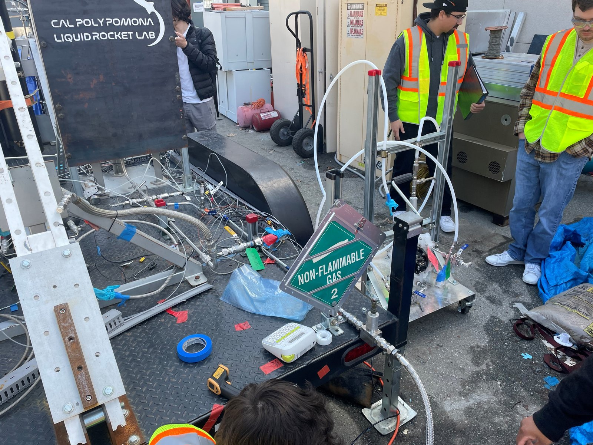
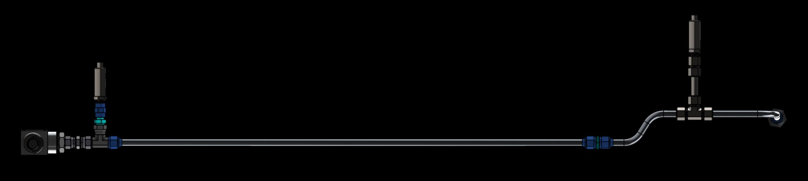
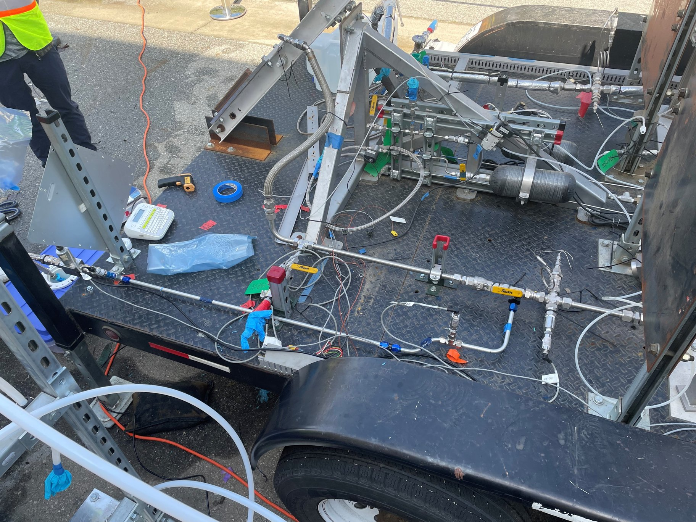
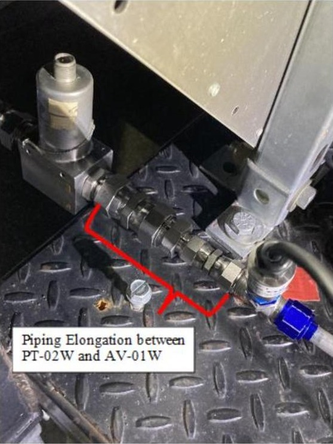
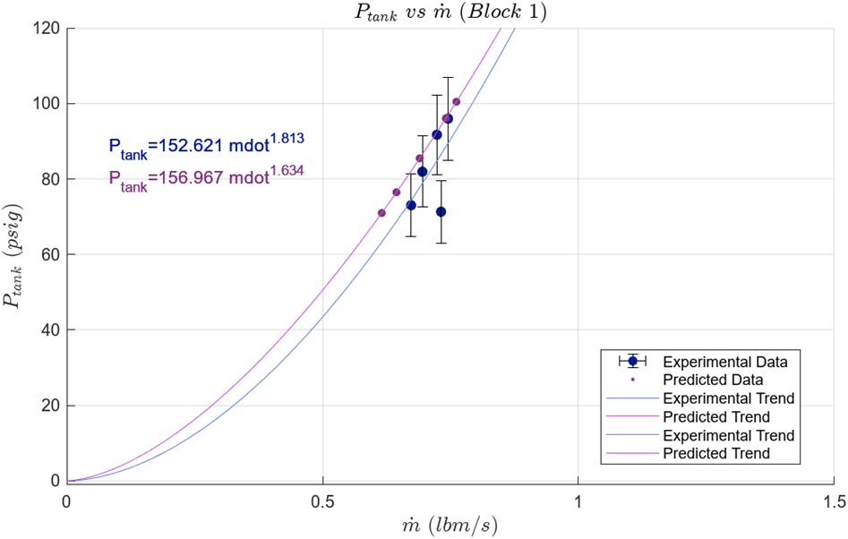
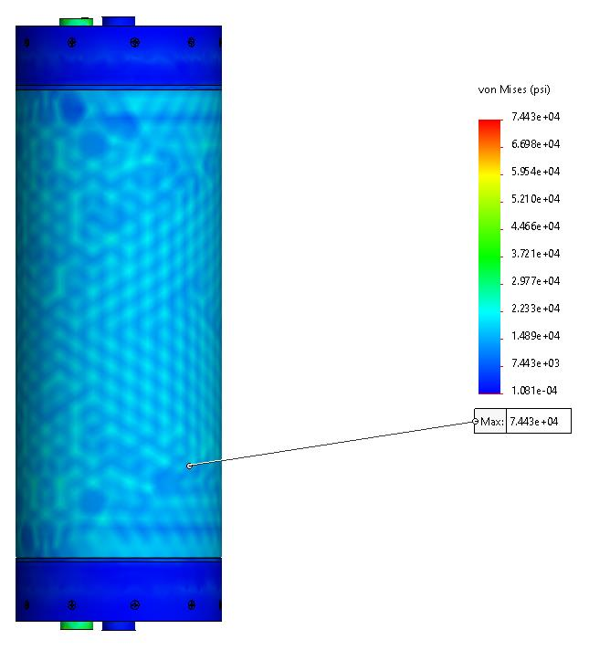

Understand the measurement path.
Read sensor data in the context of the piping, components and test environment.
CPP Liquid Rocket Lab / Propellant Feed Systems team / 2022–2023
Connecting the hardware
to the test evidence.

Propellant Feed Systems team
Student engineering project.Records and shared reporting
Hardware traceability and failure analysis.Hardware, test data and models
Team work with explicit limitations.My contribution
I helped connect project records, modeling assumptions and test evidence on the Propellant Feed Systems team.
These are reporting and documentation contributions; they do not establish sole authorship of the models or personal execution of every test shown below.
System & setup
The isolated replica makes the piping layout easier to follow. On the stand, that layout becomes an assembly of fittings, valves, sensors and wiring.


The wider view shows the test environment. This detail shows the connections behind the measurements.
The team used water-flow testing to characterize feed-system behavior. It was a ground test of replica piping, not a flight-performance demonstration.
Team test evidence
The post-test analysis examined both physical connections and the calculations used to interpret the measurements.

A visible leak prompted a reset and repeat of run 3. The report also notes uncertainty when comparing earlier measurements.
A separate collection-container mass accounting error required a calculation correction. That correction was distinct from the leak and retest.
Team evidence from Appendix V; my authorship of that appendix is unconfirmed. No percentage improvement is claimed.

Read this trend alongside the documented test issues. It does not establish flight performance or a measured reliability improvement.
Team model
The tank study considered combined pressure and thermal loading. The stress field helps explain the model; it does not measure tank service life.

I contributed to the shared tank-analysis reporting in section VIII. Sole creation of this model is not attributed to me.
The study compared SolidWorks fatigue analysis with hand calculations. Its conclusions depend on the modeled conditions and assumptions, rather than a measured endurance test.
What I learned
My final-report reflection connects three habits: understand the measurement path, examine uncertainty, and record changes as they happen.
Read sensor data in the context of the piping, components and test environment.
Check assumptions before treating a nominal prediction as a decision-making input.
Keep configuration records current so later analysis has a clear hardware reference.
Credits & sources
All selected visuals are credited to the B1LV project team, Cal Poly Pomona Liquid Rocket Lab, 2022–2023. First-person statements describe my documented contribution.